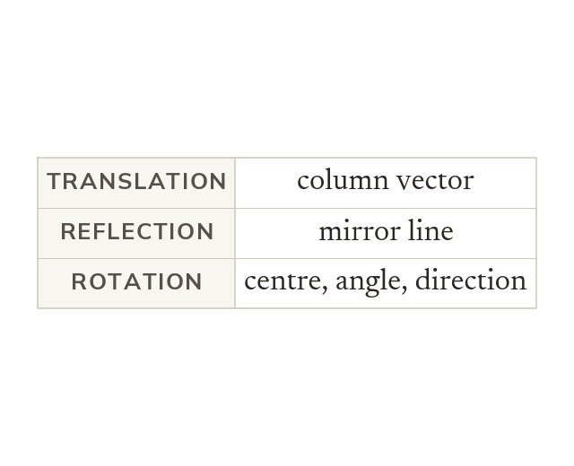

What each one needs
A translation needs a column vector. A reflection needs a mirror line. A rotation needs a centre, an angle and a direction.
A translation needs its column vector, and a reflection needs its mirror line. A rotation needs all three of its centre, angle and direction.